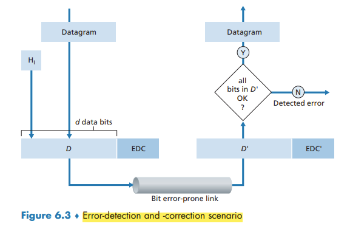
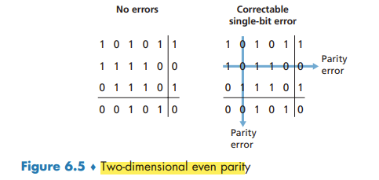
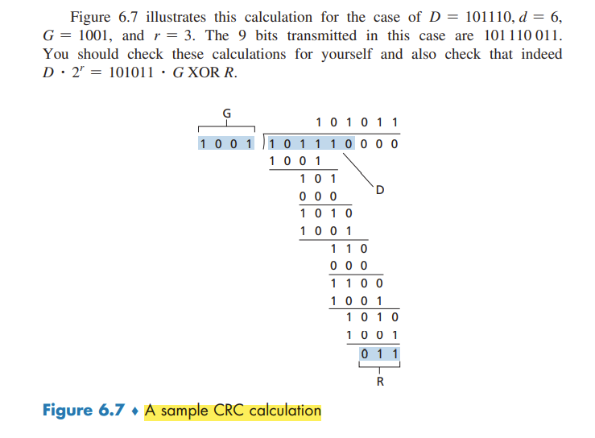

Error-Detection and -Correction Techniques.html## Error-Detection and -Correction Techniques

Techniques for detecting errors in the transmitted data:
- parity checks
- checksumming methods
- cyclic redundancy checks
Parity Checks
In an even parity scheme, the sender simply includes one additional bit and chooses its value such that the total number of 1s is even.
Under burst error conditions, the probability of undetected errors in a frame protected by single-bit parity can approach 50 percent.
With this two-dimensional parity scheme, the parity of both the column and the row containing the flipped bit will be in error. The receiver can thus not only detect the fact that a single bit error has occurred, but can use the column and row indices of the column and row with parity errors to actually identify the bit that was corrupted and correct that error!

The ability of the receiver to both detect and correct errors is known as forward error correction (FEC).
Checksumming Methods
The Internet checksum is based on this approach—bytes of data are treated as 16-bit integers and summed.
the receiver checks the checksum by taking the 1s complement of the sum of the received data (including the checksum) and checking whether the result is all 0 bits. If any of the bits are 1, an error is indicated.
Checksumming methods require relatively little packet overhead. For example, the checksums in TCP and UDP use only 16 bits. However, they provide relatively weak protection against errors as compared with cyclic redundancy check.
error detection at the link layer is implemented in dedicated hardware in adapters
Cyclic Redundancy Check (CRC)
CRC codes are also known as polynomial codes
Consider the d-bit piece of data, D, that the sending node wants to send to the receiving node. The sender and receiver must first agree on an r + 1 bit pattern, known as a generator.
For a given piece of data, D, the sender will choose r additional bits, R, and append them to D such that the resulting d + r bit pattern (interpreted as a binary number) is exactly divisible by G (i.e., has no remainder) using modulo-2 arithmetic.
All CRC calculations are done in modulo-2 arithmetic without carries in addition or borrows in subtraction. This means that addition and subtraction are identical, and both are equivalent to the bitwise exclusive-or (XOR) of the operands.
Multiplication and division are the same as in base-2 arithmetic, except that any required addition or subtraction is done without carries or borrows.
